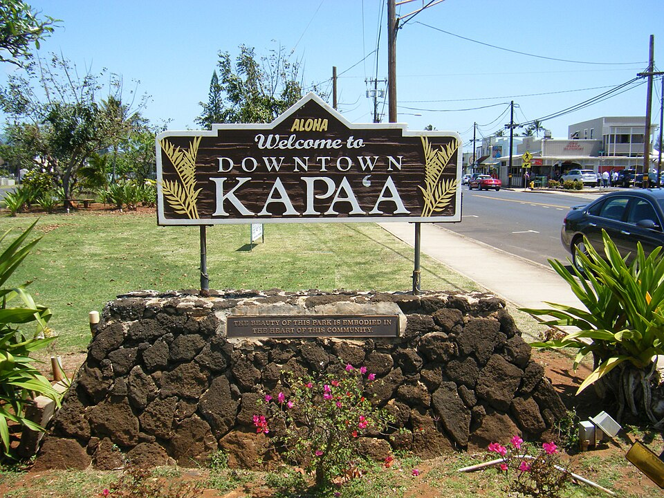

Kapaʻa
Place: Kapaʻa, Kauaʻi
Type: Town / traditional ahupuaʻa
Name meaning: From ka (the) and paʻa (firm, solid, fixed, or secure), commonly interpreted as "the solid one."
Traditional pronunciation: Tapaʻa, reflecting the traditional t pronunciation of Kauaʻi and Niʻihau Hawaiian.
Story it tells: How an ancient Hawaiian place name survived the transformation of an agricultural landscape into a sugar and pineapple plantation town, and eventually one of Kauaʻi's major residential and commercial centers.

Kapaʻa takes its name from the Hawaiian words ka (the) and paʻa (firm, solid, fixed, or secure), commonly interpreted as "the solid one." In the traditional Hawaiian dialect of Kauaʻi and Niʻihau, the name was pronounced Tapaʻa, reflecting the use of a t sound where standardized Hawaiian uses k. The circumstances behind the naming are not well documented, although some interpretations connect the name with the area's firm coastal ground or protective reef formations. Kapaʻa was an ahupuaʻa within the traditional moku of Puna. Its landscape included coastal wetlands, streams, and agricultural lands extending deep inland, likely following Kapa‘a, Konohiki, and other streams.
The development of modern Kapaʻa began in the late nineteenth century with the expansion of sugar cane plantations. In 1877, Captain James Makee established the Makee Sugar Company in a partnership with Hui Kawaihau, a Native Hawaiian agricultural enterprise organized under King David Kalākaua. The hui attempted to establish sugar production in the area but struggled financially and dissolved within several years. The sugar mill was eventually relocated north to Keālia in 1884. Plantation workers and their families, including Hawaiian, Chinese, Japanese, and Portuguese residents, helped establish the foundations of a growing community, with small businesses and services emerging along the coastal road.
Kapaʻa's transformation into a commercial town accelerated in 1913 with the opening of the Hawaiian Canneries Company pineapple cannery. The operation provided employment for hundreds of workers and helped support new residential neighborhoods, schools, churches, and businesses. A major fire in 1923 damaged part of the commercial district, prompting rebuilding along what became Kūhiō Highway. The wooden storefronts and closely spaced businesses synonymous with Old Kapaʻa Town reflect this period of plantation-era growth. By the middle of the twentieth century, Kapaʻa turned into an important commercial and residential center for Kauaʻi's eastern side, supported by both agriculture and the businesses serving plantation families.
The closure of the pineapple cannery in 1962 marked another turning point. As plantation agriculture declined, a new tourism driven economy was expanding along Kauaʻi's eastern coastline, increasingly marketed as the Coconut Coast. Hotels, condominiums, shopping centers, and residential subdivisions were built to support this newer industry and people who worked in it. Today, the town combines historic storefronts and locally owned businesses with newer development, reflecting more than a century of economic and social change. Its name tells a different story, preserving the identity of an older Hawaiian land division and a traditional pronunciation that remains part of Kauaʻi and Niʻihau's linguistic heritage.